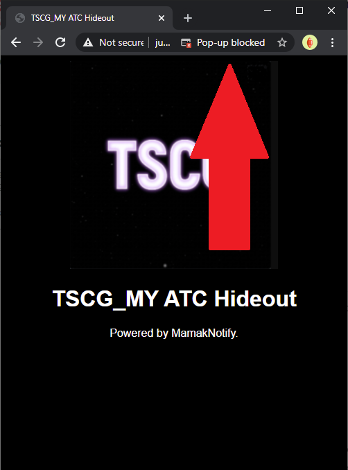
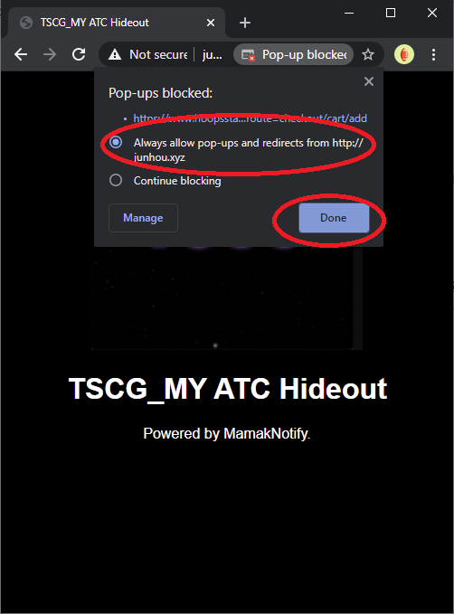

NOTE: ATC only works with PC. If your using a phone, this ATC method will NOT WORK
How to enable ATC?
Click on the popup blocked on the right of the address bar:

Click on "Always allow pop-ups and redirects from https://junhou.xyz"

ATC should work on your browser now!
Powered by MamakNotify.